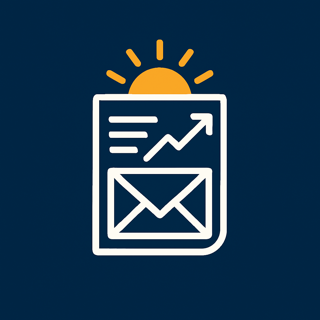

Social feeds weren't built to inform you, they were built to hold your attention. The Morning Report delivers a personalized, trustworthy daily briefing so you can form your own opinions in under two minutes.
Built with students, for the next generation of informed readers.

News Sources Scanned
Market Monitoring
Personalized to You
To Stay Informed
As TikTok and Instagram have grown hugely in use among young people, thousands, if not millions, of the youth of the world have come to rely on these platforms and their influencers for news and information about world events. From personal experience, we know these influencers can be misleading, provide biased opinions, or simply share false information.
The Morning Report was built to let you keep the convenient, "news will find me" habit so common among young people, while still receiving concrete, trustworthy information from reliable and respected sources. Every headline is sourced from reputable outlets and linked back to the original article, so you can verify it yourself.
Our hope is that this helps you form your own opinions and decisions, investigate the topics that interest you further, and advance your understanding of world affairs, a skill that matters in every area of life. We especially want to encourage younger students to use the app as a way to build financial literacy and the ability to weigh facts and events to reach their own conclusions, rather than being told what to believe by external sources.
From the world's news to your inbox, in three simple steps.
Pick the regions, sectors, trends and stocks you care about. Everyone's report is different.
We scan thousands of reputable sources, cut the clickbait, and keep only what's reliable and relevant to you.
5 general headlines, your stock overview, and 5 personalized stories, delivered by push or email, right on time.
These are real reports generated by our own system, not mockups. Open one to see exactly what lands in your inbox.
Staying genuinely informed shouldn't take your whole morning, or come from an algorithm optimized for engagement over accuracy.
Designed to help you build media literacy and financial confidence, not just read headlines.
Every headline links back to a reputable source, so you can dig deeper and check the facts yourself.
Choose your stocks, sectors, regions and trends. Your report reflects what you actually care about.
Choose when your report lands, and get a fresh briefing timed to your morning routine, in your timezone.
Your data stays yours. We don't sell your information to third parties. Ever.
Track how your chosen stocks moved in the last 24 hours, alongside the news driving those moves.
Real feedback from users since our launch in February 2026.
"As a new boy in year 9, I find The Morning Report extremely helpful to keep me updated on what's going on around the world. It lets you customise which news topics, stocks and countries you want to know about, which is super easy to do."
"The Morning Report is a super helpful and reliable source to get useful information about current affairs and financial news. It keeps me updated every morning in a few minutes and allows me to keep track of things I am interested in with the customisation function."
"The Morning Report has allowed me to track specific aspects of world affairs I am particularly interested in, and has directed me towards reliable sources. I use it to stay informed about British political and economic news, which has been useful in my A-level studies, and to track financial news for corporations I have developed an interest in."
"I've often been wary of receiving news through social media, which may not be reliable. With The Morning Report I can trust the news I receive is reliable and from reputable sources, and I can verify that myself with the referencing in the report."
Not at all. Every report leads with general headlines covering world events, politics and trends. Your stock watchlist is one personalized section within it, not the whole product.
We aggregate stories from thousands of reputable news outlets and market data providers. Every headline links back to the original source so you can verify it yourself.
Yes, The Morning Report is free to download and use. We are supported by privacy-conscious advertising that keeps our servers running.
Navigate to the "Watchlist" tab in the app. You can add stocks by symbol (e.g., AAPL) or company name, and remove them with a swipe.
Visit our contact page to reach the team. We typically respond within 24 hours.
Yes, we're actively looking to partner with schools and educators to help students build financial and media literacy. Reach out and let's talk.
Join students and curious minds who trust The Morning Report to cut through the noise, every morning.
Download Now